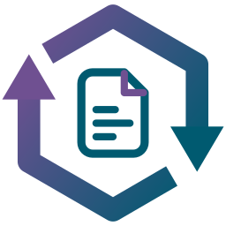

Guide de démarrage
Version d'essaiJalonia · English version · Ouvrir l'application
En 15 minutes : découvrir un exemple, écrire ton premier document, obtenir le Word ou le PDF. L'application tourne dans ton navigateur (Chrome ou Edge recommandés) : rien n'est envoyé sur internet.
-
Regarde un exemple
Menu Fichier › Exemple d'instruction de travail (ou Exemple de procédure). Parcours les 4 étapes de la colonne de gauche : Identification, Déroulé, Synthèse, Génération. Clique sur Aperçu logigramme (étape 2) pour voir le dessin.
-
Indique ton organisation (facultatif)
Fichier › Cartographie des processus : importe le PDF de ta cartographie, saisis tes processus, ou charge « Exemple ». L'identification propose alors tes processus, ton domaine (Management, Réalisation, Support, Surveillance & mesure) et tes codes.
-
Commence ton document
Fichier › Nouveau document, puis choisis Procédure (niveau 2) ou Instruction de travail (niveau 3). Remplis l'étape 1, Identification.
-
Écris le déroulé
À l'étape 2, une instruction à la fois : un verbe à l'infinitif, 5 mots au plus, un rôle, ce qui entre et ce qui sort. Les pastilles ajoutent une particularité (contrôle, décision, délai, indicateur…).
-
Vérifie
La bande colorée en bas compte les erreurs et les alertes selon les règles du langage (clique dessus pour la déplier). À l'étape 3, relis la synthèse puis valide-la : l'étape 4 s'ouvre.
-
Génère et enregistre
À l'étape 4, télécharge le Word ou enregistre en PDF. Bouton Enregistrer : fichier .json à garder ; Ouvrir un fichier pour le reprendre. Ton brouillon vit dans le navigateur : vider ses données l'efface.
Aide-mémoire des règles
- Procédure : 6 rôles au plus ; 5 à 10 instructions ; 5 pages A4 au plus ; texte du logigramme lisible (5,5 pt au minimum).
- Instruction de travail : un seul rôle ; 5 à 10 opérations ; chaque contrôle est une question ; une page A4.
Un blocage, une idée, une erreur dans le dessin ? Clique sur Envoyer un retour en bas de la colonne de gauche : la version et ton navigateur sont préparés pour toi. Dis ce que tu voulais faire et ce qui s'est passé.